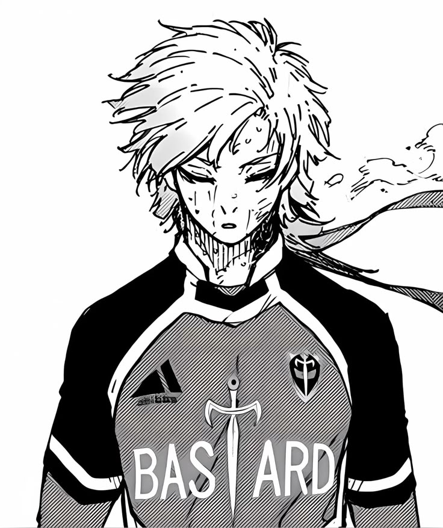

About Me
Hi, my name is Aris, and I'm excited to share a little about myself on this page.
One of my favorite things to do is cook — I love spending time in the kitchen trying out new recipes. When I'm not cooking, you can usually find me playing Pokémon games, which has been one of my favorite hobbies for as long as I can remember.

Skills
| Skill | Description |
|---|---|
| Cooking | Enjoys preparing and trying out new recipes |
| Adaptable | Adjusts easily to new situations and challenges |
| Teamwork | Works well with others to reach a common goal |
Hobbies
- Cooking
- Watching Movies
- Playing Pokémon
Goals
My goal is to be financially stable and happy in life. I believe that building good habits now, like teamwork and adaptability, will help me get there.
My Favorite Pokémon
My favorite Pokémon is Lucario, a Fighting/Steel-type known for its loyalty and ability to sense aura. I like how disciplined and dependable Lucario is, which is something I try to apply to my own teamwork and adaptability.
Useful Links
Check out the official Pokémon website or read up on one of my favorite Pokémon, Lucario, on Pokémon DB. Both links open in a new tab.